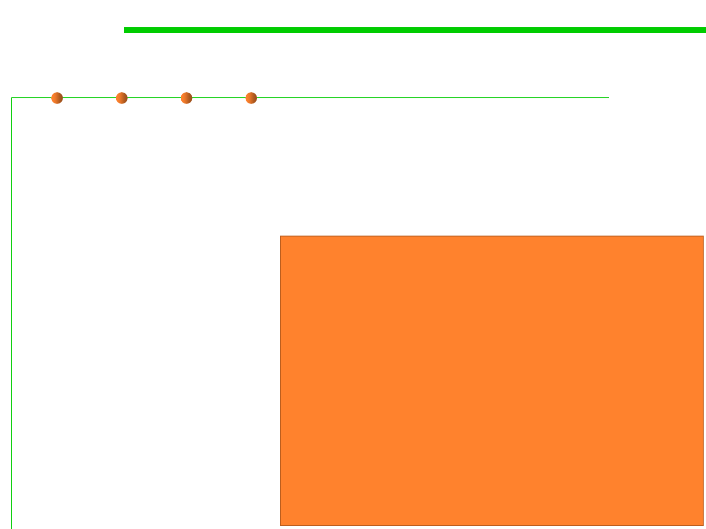

4.1 Construction for Understandability
Single-Line / Trailing / End-Of-Line comments
▪ Single-line comment: very short comments can appear on the same
line as the code they describe, but should be shifted far enough to
separate them from the statements.
▪ Trailing comments: Short comments can appear on a single line
indented to the level of
the code that follows.
if (condition) {
A single-line comment
should be preceded by
a blank line.
▪ End-Of-Line Comments
the // delimiter can
comment out a
complete line
or only a partial line.
/* Handle the condition. */
...
}
if (a == 2) {
return TRUE;
} else {
return isPrime(a);
/* special case */
/* works only for odd a */
if (foo > 1) {
...
}
else {
return false;
}
// Explain why here
// Explain why here.